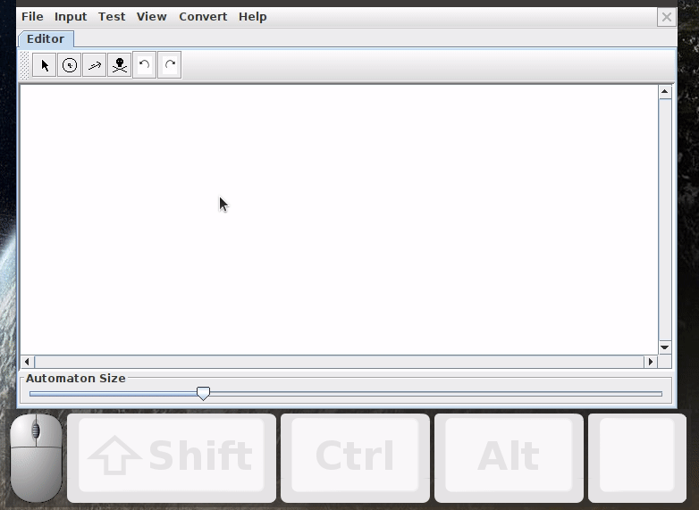
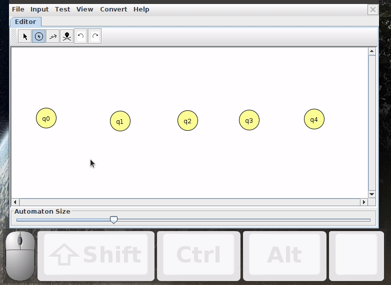
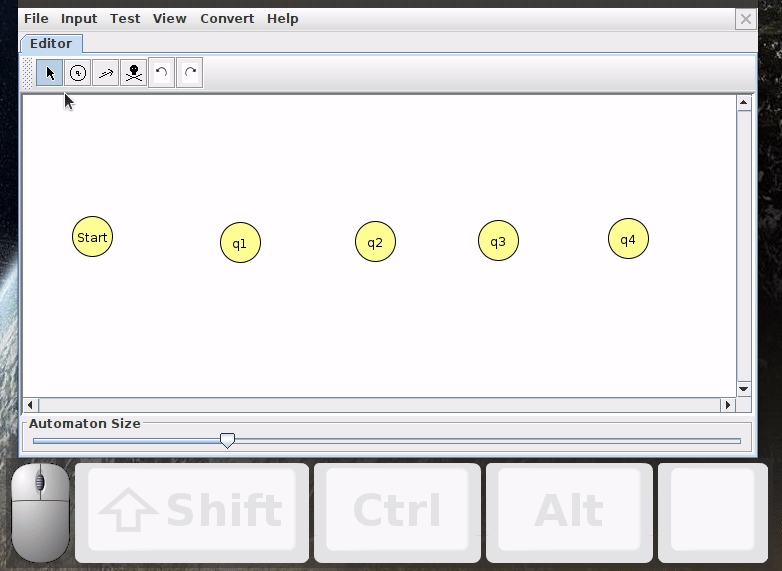
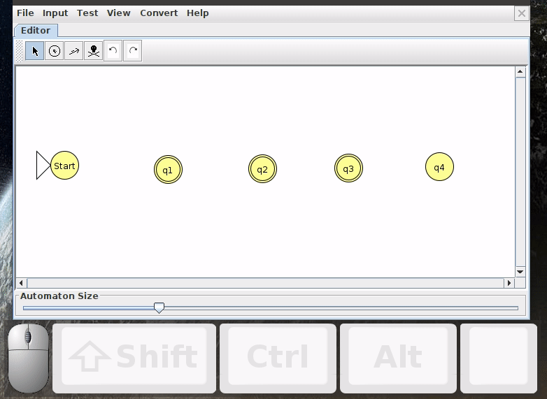
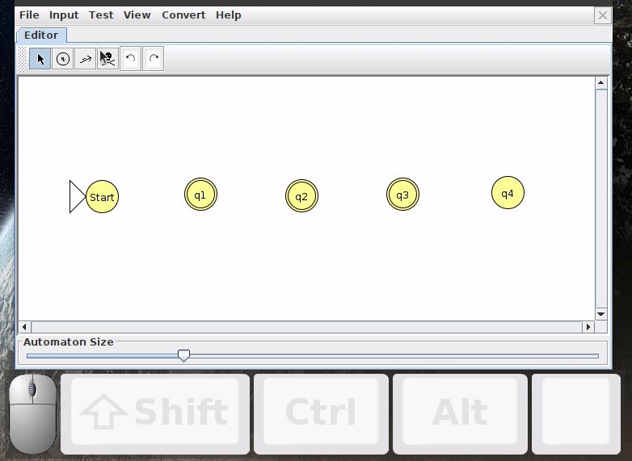
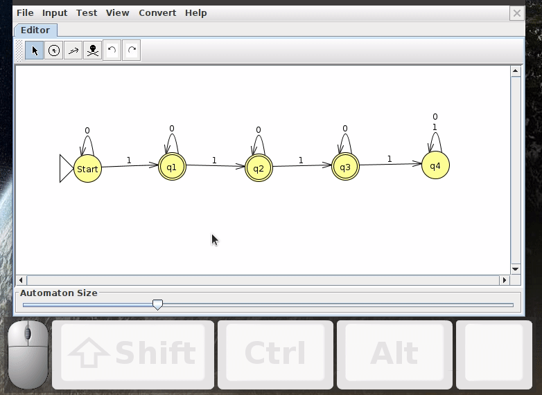

Software Environment
The main software package we'll be using in this class is known as JFLAP, which is a visual tool we can use to "program" the mathematical machine models we're building in the course. You should have gotten JFLAP installed on your computer the first week of class. There's a nice youtube playlist at this link with more information, but below are a few GIFs to help you with a quickstart
DFAs
Below are steps to how to manipulate DFAs in JFLAP. As an example, we will build a DFA that accepts the language of binary strings with between one and three 1s and an arbitrary number of 0s (Click here to download the resulting JFLAP file).
Adding States
Click the circle button, then left click at different locations on the canvas to add states
Renaming States
To rename a state, click on the mouse cursor button, then right click on the node whose name you wnat to change and click "Set Name"
Setting Initial State And Accept States
To designate a node as an initial state or an accept state, make sure you're in the mouse cursor mode, then right click on the node and select "Initial" and "Final," respectively
Repositioning Nodes
Sometimes you'll want to reposition nodes, particularly when the transitions are getting all tangled up. To do this, makes sure you're in cursor mode, then left click on a node and drag
Creating Transitions
To create a transition from one state to thenext, select the arrow button, then left click and drag from the starting node to the end node. A text area will come up where you can enter the element from your alphabet that gives rise to this transition. Note that the starting node and the end node can be the same (a self transition), in which case you have to drag away from the node and then right back to it
Deleting Nodes / Transitions
To delete a node or a transition, click on the skull and crossbones button, then left click on what you want to delete
Stepping Through An Example
To step through a single example like a debugger, click on the menu Input->Step By State. Then, you can enter the string you want to test and step through it. If the string accepts, the box showing you the steps will turn green. If it rejects, that box will turn red.
Stepping Through Multiple Examples
To rapidly test multiple examples in a row, click on the menu Input->Multiple Run. Then you can enter a different on each row of the Input column that pops up, and when you're ready, you can click Run Inputs. At that point, the Result column will indicate whether each input accepted or rejected. I will often provide test files with lots of cases for you to see if your DFAs are working